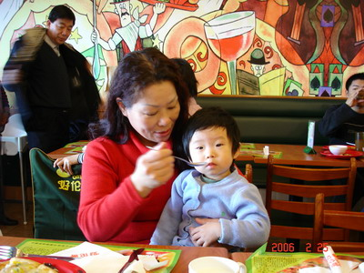
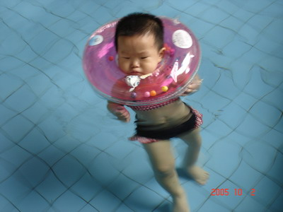
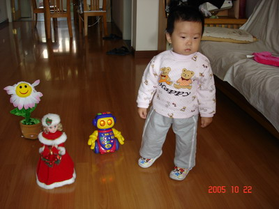
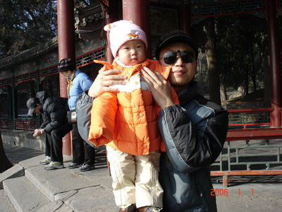

一岁半的时候，曼曼身高86cm，体重12.6kg，是一个高个子、体型匀称的健康宝宝。
一岁多的时候，郭嘉的姑姑回去了。我们从山西给曼曼请来了一个新阿姨。这个阿姨刚来的时候，我们着实觉得心里没谱。她太时髦了，披肩的卷发，高跟皮鞋，比起我是有过之而无不及。但是在我们家待了几天之后，发现她对曼曼很好，平时不多说话，处事小心，干起活来也很能干，几天之后我们就觉得很是满意，就此把她留下了。曼曼的运气还是挺不错的，请的几个阿姨特色不同，但人都不错，不用像别人家总要折腾着换保姆。

曼曼和梁姐
一岁多一点的时候，曼曼在九华山庄度过了十一的假期。在这里曼曼第一次体验了在游泳池中游泳的感觉。刚开始有点怕，后来已经能套着游泳圈在泳池里走路了。

一岁半之前，曼曼已经会发很多音了，很多儿歌和古诗她都记得很清楚，可以跟着说出每句的最后一个字。一岁半的时候，曼曼的语言能力突然上了一个台阶，进入什么都想说的阶段，嘴里整天叽哩哇啦的说个
不停，有时自己坐着还自言自语，爸爸妈妈说一句话她就像八哥一样学个不停。好像突然之间长大了似的
，我们对她说的话她基本上都能听懂，还经常能表达出自己的意思。比较经典的本领有：
1）会从1数到30。
2）会说出妈妈的手机号码。
3）会说出爸爸妈妈的名字，会说爷爷奶奶住在甘家口，曼曼住在田村，会说自己的名字。
4）会从头到尾背很多首儿歌，包括“小小子，坐门墩……”，“小老鼠，真讨厌……”“小娃娃，光脚丫……”等等，我们都数不清她到底会多少首。
5）会唱英文“ABC”的歌，会一些英语单词，如apple,banana,bear,boy,hello等等。
曼曼发音清楚，语音稚嫩，所以说话十分逗人喜爱。曼曼想让人抱时，会指定某个人大叫“妈妈（或爸爸、阿姨）抱抱曼曼”，要是大家忙没人抱她，她会改叫“抱抱小宝宝呀”，以引起我们注意。
曼曼喜欢自己脱衣服，会脱系扣子的毛衣，有时自己能脱下来，有时要人帮忙脱一只袖子下来。
曼曼特别喜欢“搬家”的游戏，我们门口放的鞋子，她自己的玩具等等，她特喜欢从一个地方搬到另
一个地方再搬回来，乐此不疲，每次都能玩半个多小时。
曼曼有时候很胆小，怕会动的玩具。她奶奶家那个会唱歌和走路的圣诞娃娃，她一直都很害怕，看见
娃娃冲着她走过来，她会吓得躲开，或者抱住我的腿把脑袋埋进来；把娃娃放在屋子中央，她就只在一个
小角落活动，决不到娃娃身边去。但是她又喜欢指着那个娃娃，嘴里啊啊的叫，意思是让别人去把娃娃的
开关打开让娃娃唱歌。

曼曼会说很多话，但是在尿之前还是不会提醒我们，所以曼曼还是经常尿裤子。有意思的是一次我正
在给她换裤子，她突然对着我大声说：“尿裤子大将”，我乐得不行，问她“谁呀？”她笑着说：“曼曼
呀”。
曼曼一岁半的时候，有一天我给她唱一首歌“宝贝，你爸爸正在过着动荡的生活……”，唱完无意中瞥了一眼曼曼，发现她的嘴角不断的往下撇，好像要哭了一样。我问曼曼“妈妈再给你唱一遍吧？”她说“不唱，不唱”。我又开始唱，刚唱了一句她就开始哇哇的大哭，还叫着“爸爸，爸爸”，哄了半天才哄好。她睡了午觉起来之后，我为了试试她，又开始给她唱这首歌，一句还没唱完她又开始大哭，怎么哄都不行，一直到我说抱她给爸爸打电话她才止住了哭声。难道她这么小一个宝宝能够听懂这首歌的意思？
